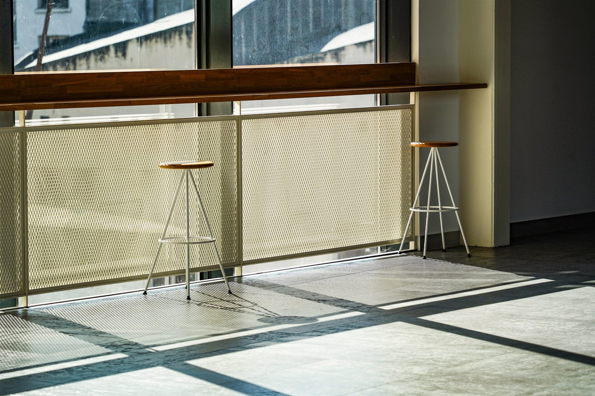
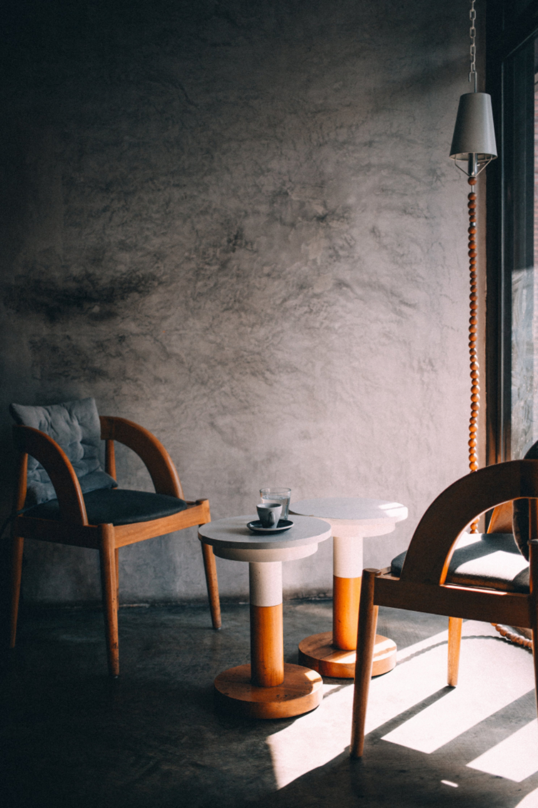
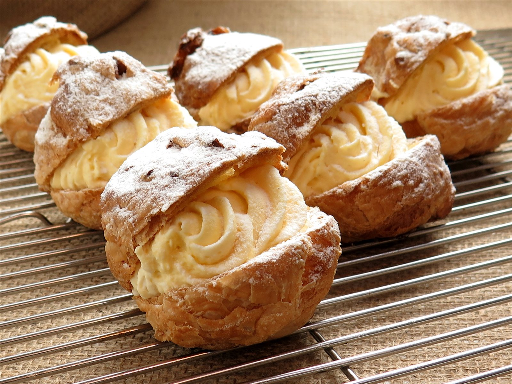
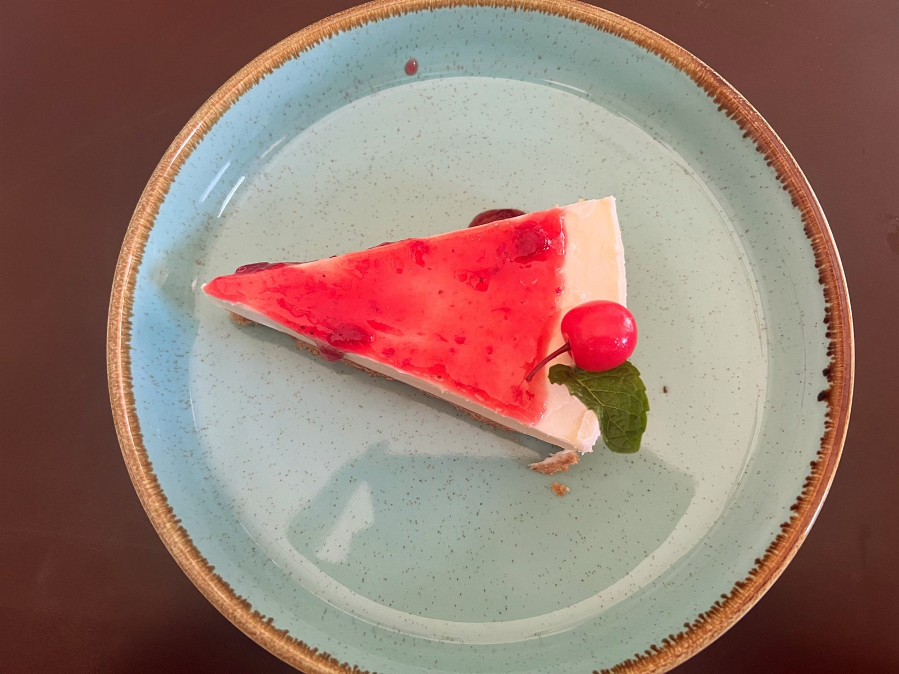
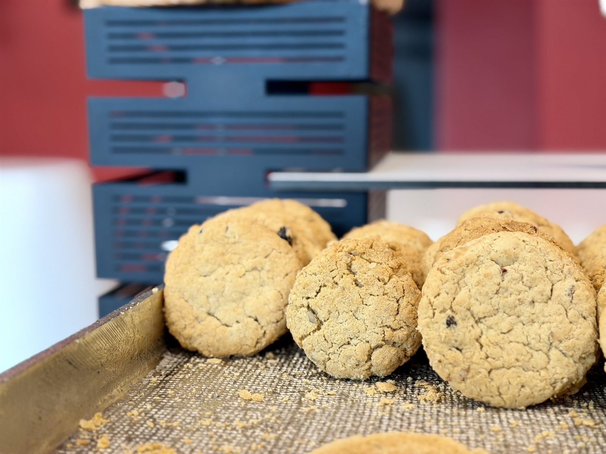
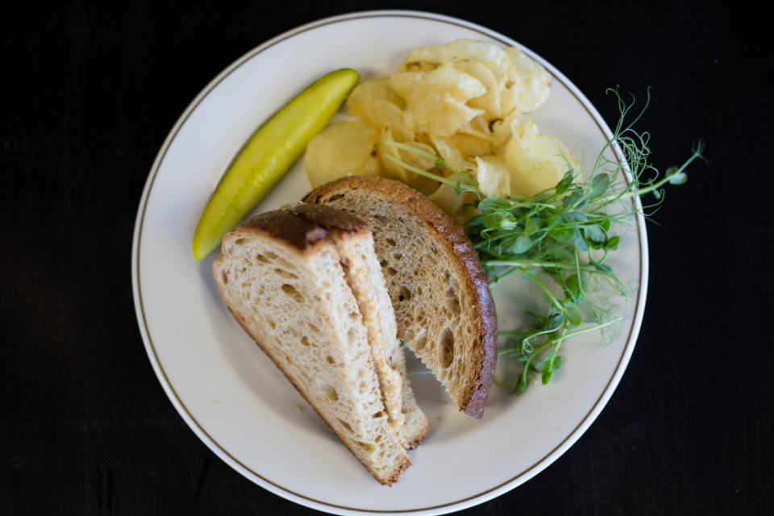
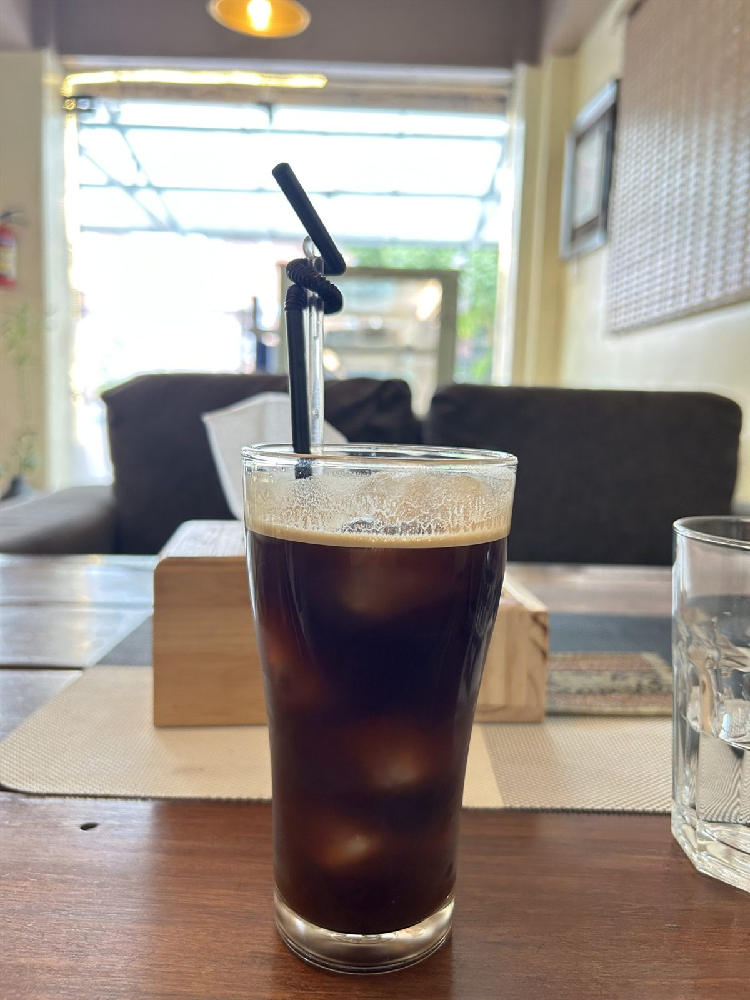
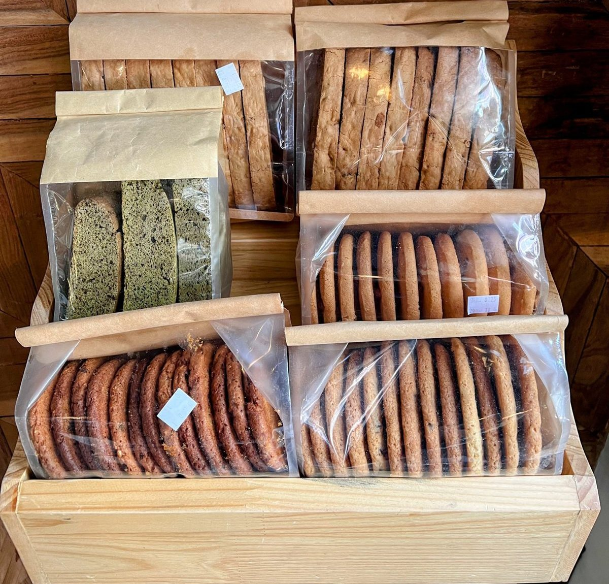

SUNKEN LIGHT
一段下がった先に、
静かな時間があります。
千葉県市川市新田・市川真間駅から徒歩1分。
デザートと静けさを味わうカフェ、マルブレ。

SILENCE
スマホを置いて、静かな時間を
市川真間駅から歩いて1分。道路から少し下がった場所にあるマルブレは、昼間でも店内がほんのり薄暗く、そのぶん窓から差し込む光がやわらかく感じられます。
店内では、スマホやパソコンのご利用を控えていただくようご案内しております。丁寧な接客のもと、静かに過ごせる時間を大切にしているお店です。本を読むように、ゆっくりとデザートやお食事を味わっていただければと思います。
Ⅱ ― しばし、静寂を。

SIGNATURE
シュー・ラ・クレームと、季節のデザート
サクサクのシュー生地に、カスタードと生クリームをぎっしりと詰めた看板デザート「シュー・ラ・クレーム」。甘さを抑えた軽やかな味わいは、一口ごとに食感の違いを楽しめます。

看板デザート
シュー・ラ・クレーム
サクサクのシュー生地に、カスタードと生クリームをたっぷりと。大きめサイズで、甘すぎない完璧なバランスに仕上げています。
-
スコーン
焼きたての香りが広がる、定番の一品です。
-

フロマージュ・クリュ
レアチーズケーキにいちごといちごジャムを重ね、ココナッツグラノーラと薄いメレンゲで食感にアクセントを添えました。
-

フィナンシェ / クッキー / パフェ
バターの香り豊かな焼き菓子から、グラスで楽しむパフェまで。
季節のデザートは内容が変わります。最新情報は公式Instagramでご案内しておりますので、あわせてご覧ください。 @m___arbre
BRUNCH
気まぐれサンドウィッチと、軽食
その日ごとに内容が変わる「気まぐれサンドウィッチセット」や、桃とモッツァレラを合わせたフォカッチャサンドなど、デザートとあわせて楽しめる軽食もご用意しています。ブランチの時間帯にご来店いただくお客様も多く、静かな店内でゆっくりとお食事の時間をお過ごしいただけます。
営業時間の詳細は「アクセス」をご確認ください。

CITRON
自家製シトロネードと、定番のドリンク
自家製の柑橘ジャムをたっぷりと使った「シトロネード」は、人気の一杯です。ほかにも、コーヒー・紅茶・ジュースなど、定番のドリンクをご用意しています。デザートやお食事とあわせて、お好みの一杯をお選びください。

TERRACE SEAT
ご予約制
2名様まで
TERRACE
外テラス席は、ご予約制です
店の外には、小さなテラス席をご用意しています。こちらの席はご予約制で、2名様までのご利用となります。天気の良い日に、外の空気を感じながら過ごす時間もマルブレならではです。
ご予約はお電話にて承っております。Instagramのダイレクトメッセージでもご相談いただけますが、確実なご案内のため、まずはお電話でのご確認をおすすめしています。
TAKEOUT
デザートを持ち帰る
シュー・ラ・クレームやクッキー、フィナンシェなど、店内でお楽しみいただいているデザートの一部はテイクアウトも可能です。当日のご用意状況は日によって異なりますので、詳細は公式Instagramまたはお電話にてご確認ください。

VOICE
お客様の声
-
「少し奥まった場所にあって静かなんだけど、ちゃんと日差しも入ってきて心地いい空間でした」「シュー生地はサクサクで、クリームも甘すぎず完璧なバランス」
ご来店のお客様(4か月前のクチコミより)
-
「道路から少し下がった造りで、昼間でも中は薄暗い感じ。お料理はとっても美味しいです」
ご来店のお客様(6か月前のクチコミより)
-
「チーズケーキのようなもの、とっても美味しかったです。お皿も可愛かったです」
ご来店のお客様(4か月前のクチコミより)
-
「桃とモッツァレラのフォカッチャサンド、こんなに美味しいフォカッチャ、初めて食べました」
ご来店のお客様(1か月前のクチコミより)
-
「丁寧な接客、丁寧な料理。いつも美味しくいただきます」
ご来店のお客様(2年前のクチコミより)
ACCESS
アクセス
- 住所
- 千葉県市川市新田[番地は確認中です]
市川真間駅から徒歩1分 - 電話
- 047-311-4366(タップで発信)
- @m___arbre
- Google評価
- 4.4(クチコミ51件)
営業時間・定休日は現在確認中です。最新情報は公式Instagramをご確認いただくか、お電話にてお問い合わせください。
なお、口コミには「ブランチは9時〜14時ごろ」というお声もございます。正式な営業時間・定休日は変更となる場合がございますので、あらかじめご確認のうえご来店ください。
テラス席のご予約やご不明な点は、お電話にてお気軽にお問い合わせください。